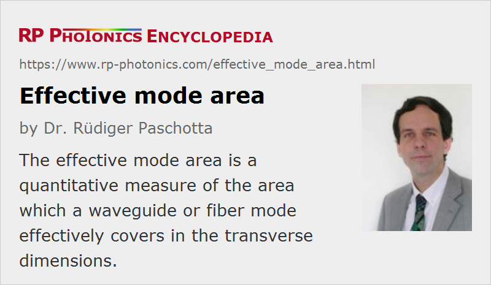

Effective Mode Area
Definition: a quantitative measure of the area which a waveguide or fiber mode effectively covers in the transverse dimensions
German: effektive Modenfläche
Categories: fiber optics and waveguides, nonlinear optics
Formula symbol: Aeff
Units: m2
How to cite the article; suggest additional literature
Author: Dr. Rüdiger Paschotta
The effective mode area is a frequently encountered concept in the context of fiber optics and other waveguides.
Modes of fibers or other waveguides have smooth transverse profiles where the definition of a mode area is not straightforward, particularly for complicated mode shapes where e.g. some 1/e2 intensity criterion as for Gaussian beams is not sensible. A useful definition for the effective mode area is
where E is the electric field amplitude and I is the optical intensity. The integration is done not only over the core area, but over the whole plane. For a Gaussian beam with radius w, the effective area is π w2, and the same equation is valid for relating the mode area to the effective mode radius. The equation would also hold for a rectangular (flat-top) intensity profile with radius w.
Figure 1 shows a Gaussian mode and a rectangular profile with the same effective mode area. For the same optical power, the Gaussian mode has twice the peak intensity.
For a higher-order mode of a fiber (Figure 2), the intensity peaks are substantially higher than for the rectangular profile.
From the effective mode area and the nonlinear index n2, one can calculate the nonlinear phase shift resulting from the Kerr effect:
where P is the optical power and L is the length of the medium. It is assumed that the nonlinear index is constant over the whole area, which is not accurate for all fibers, as the index-raising dopants can also influence the nonlinearity. Note that the nonlinear phase shift applies to the whole mode area, rather than e.g. only to the point with highest intensity, as the waveguide effect prevents the build-up of any significant transverse variations of the optical phase.
Note that depending on the shape of the mode profile, the effective area may deviate substantially from π w2 where the radius w is calculated either as an 1/e2 intensity value or with the D4σ method. In most practical cases, however, these deviations are not very large.
Typical single-mode fibers, as used e.g. for optical fiber communications, have effective mode areas of the order of 100 μm2. Large mode area fibers have several times higher mode areas, sometimes even above 1000 μm2. On the other hand, there are some photonic crystal fibers with mode areas below 10 μm2.
An important consequence of a small mode area is that the optical intensities for a given power level are high, so that nonlinearities become important. Also, small mode areas are usually the consequence of strong guiding, where bend losses and other effects of external disturbances are weak.
Note that the article on mode radius contains an equation that can be used for calculating the mode radius (and thus the effective mode area) for a step-index fiber.
If two fibers with different effective mode areas are spliced together, this will lead to some optical power loss. The article on fiber joints contains a formula for estimating that coupling loss. For efficiently coupling fibers with substantially different mode areas, certain mode field converters (or mode area adapters) are sometimes used. Often, these are made from tapered fibers, adiabatically expanding or compressing the fiber modes.
Questions and Comments from Users
Here you can submit questions and comments. As far as they get accepted by the author, they will appear above this paragraph together with the author’s answer. The author will decide on acceptance based on certain criteria. Essentially, the issue must be of sufficiently broad interest.
Please do not enter personal data here; we would otherwise delete it soon. (See also our privacy declaration.) If you wish to receive personal feedback or consultancy from the author, please contact him e.g. via e-mail.
By submitting the information, you give your consent to the potential publication of your inputs on our website according to our rules. (If you later retract your consent, we will delete those inputs.) As your inputs are first reviewed by the author, they may be published with some delay.
See also: fibers, single-mode fibers, waveguides, modes, mode radius, fiber joints, mode field converters
and other articles in the categories fiber optics and waveguides, nonlinear optics
|  |
If you like this page, please share the link with your friends and colleagues, e.g. via social media:
These sharing buttons are implemented in a privacy-friendly way!